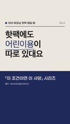
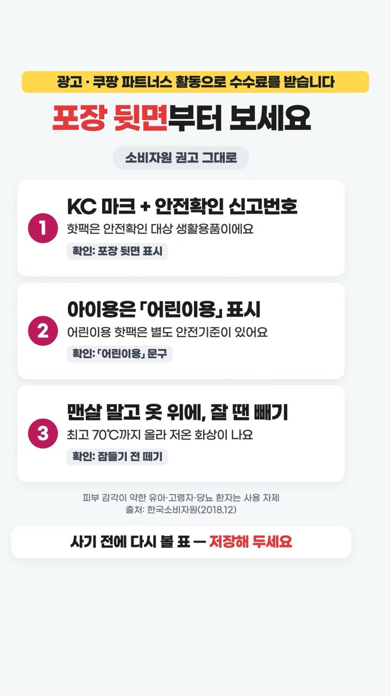

6번 영상
핫팩에도 어린이용이 따로 있대요
광고 이 게시물은 쿠팡 파트너스 활동의 일환으로, 이에 따른 일정액의 수수료를 제공받습니다.
영상에서 비교한 3가지예요. 누르면 쿠팡 검색 결과로 가요.
영상 속 비교표 바로 보기 ↓아이·어르신 핫팩, 뭐가 달라야 할까요?
「이 조건이면 이 사양」 시리즈
이런 집이라면 아이나 어르신이 핫팩을 쓴다
포장 뒷면부터 보세요
소비자원 권고 그대로
- KC 마크 + 안전확인 신고번호
- 핫팩은 안전확인 대상 생활용품이에요
- 확인: 포장 뒷면 표시
- 아이용은 「어린이용」 표시
- 어린이용 핫팩은 별도 안전기준이 있어요
- 확인: 「어린이용」 문구
- 맨살 말고 옷 위에, 잘 땐 빼기
- 최고 70℃까지 올라 저온 화상이 나요
- 확인: 잠들기 전 떼기
피부 감각이 약한 유아·고령자·당뇨 환자는 사용 자제 출처: 한국소비자원(2018.12)
